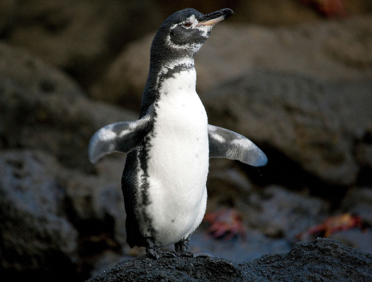
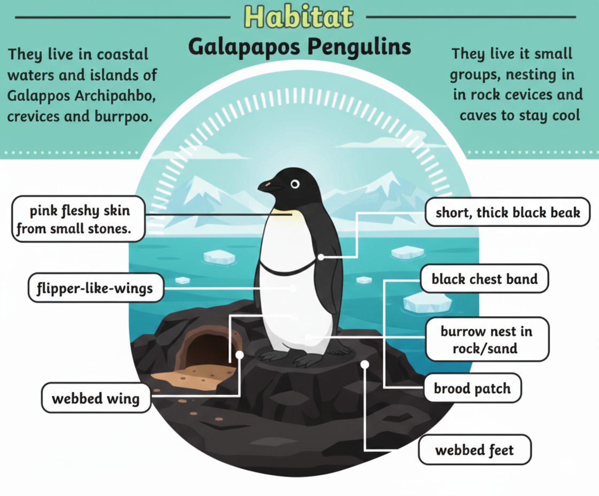
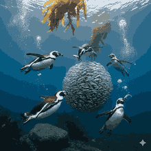

The Only Penguins Found Near the Equator

Galápagos penguins are one of the smallest penguin species and are unique because they live near the equator. They survive thanks to the cool ocean currents surrounding the Galápagos Islands.

Galápagos penguins live mainly on the Galápagos Islands off the coast of Ecuador. They prefer rocky shores and volcanic islands where they can find shade and protection.

Their diet mainly consists of small fish such as sardines and mullet. They are fast swimmers and hunt in groups for better success.